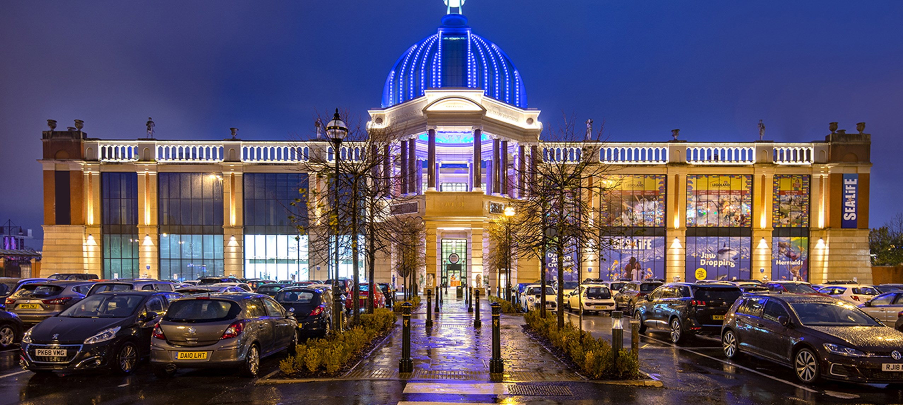
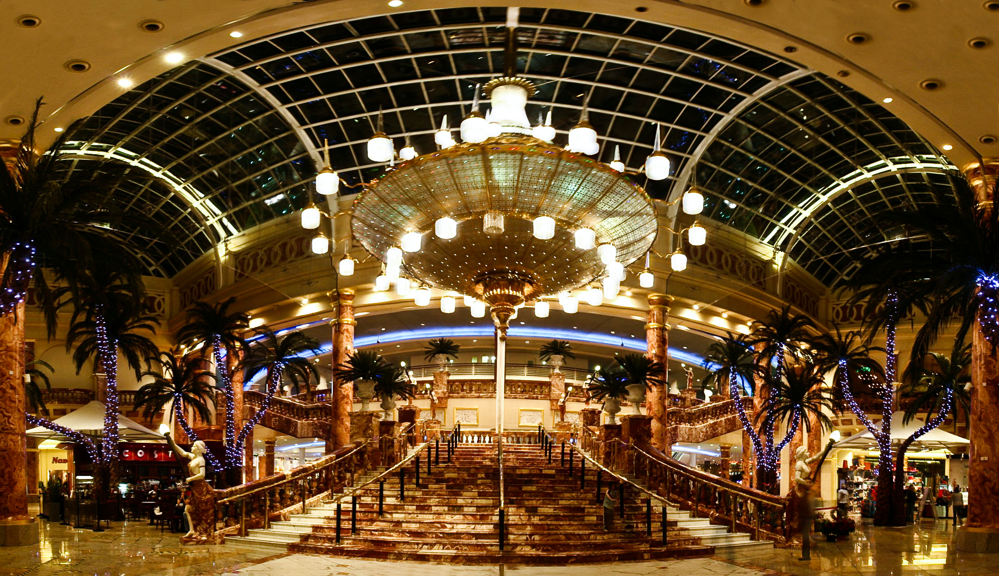
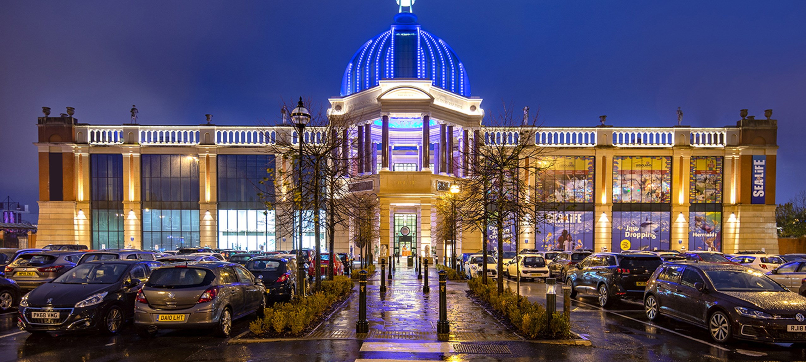
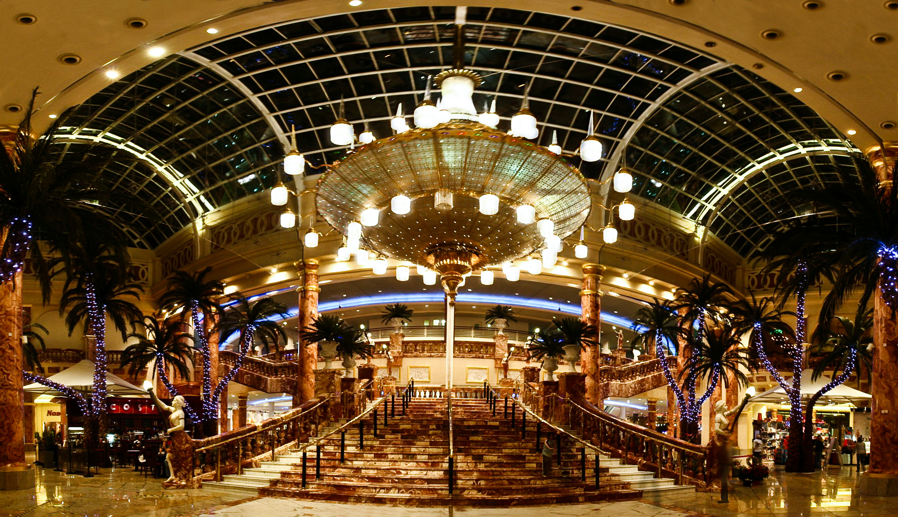

the trafford centre is one of the biggest shopping centres in the uk if not the biggest it is mostly know for having everybranded shop and every food place imaginable it is consitantly brings in large crowd in there environments the trafford centre is an amazing shopping destinatioj located in manchester england it like a shopping paradise with over 200 stores ranging from high -end fashion brands to popular the trafford centre is a premier shopping destinatio situadted in manchester england it boats an impresssive collection of over 200 stores featuring a wide r range of high-end fasionbrands popular retailers and specifically shops the architecual design of the center is truly remarkable charactoriesd by stunning domes intricate detailing and even a captivating replica ship in addition to its expensive shopping opions the trafford centre offers a diverse selection of dining establishments cafes and a state of the art cinema for your ent entertainment needs its the perfect place to spend a day induldging in retail therapy or enjoying a delious meal with friends or family im confident that youll thoroghly enjoy exploring all that the trafford centre has to offer If you are visiting Manchester for a city break and the weather is typically British, you can escape the elements by visiting the Trafford Centre. This indoor shopping mall is incredibly large, boasting over 280 stores that sell designer clothing and popular high street brands. However, if you would rather do anything else than spend the day shopping , there are still plenty of activities for you to enjoy here. The Trafford Centre is not just a shopping mall, but also a theme park, offering a 20-screen cinema, a rock climbing center, a high ropes course, and more. And if you are in town, we will ensure the best possible experience.
The Trafford Centre in Manchester is a renowned shopping destination in the UK, known for its size and iconic status. Spanning over 2.3 million square feet, this enormous retail complex houses more than 200 stores, featuring both well-known international brands and luxurious boutiques. The architectural magnificence of the Trafford Centre is truly awe-inspiring, as it draws inspiration from various styles to create a visually stunning environment for visitors. The domed ceilings, intricate detailing, and lavish decor all contribute to an exceptional shopping experience. In addition to its retail offerings, the Trafford Centre also offers a wide range of dining options, catering to different tastes and preferences. The Orient, a section within the center, provides a truly immersive experience with its themed decor and diverse selection of international cuisine. Entertainment is also a key highlight at the Trafford Centre, with attractions such as the Odeon IMAX cinema, mini-golf, and the SEA LIFE Manchester aquarium. Furthermore, the expansive food court, with its vibrant atmosphere, adds a social dimension to the overall shopping experience. With its extensive offerings and captivating ambiance, the Trafford Centre is a testament to Manchester's vibrant retail and leisure scene, attracting both locals and tourists to its captivating retail haven.
Situated in the heart of Greater Manchester, the Trafford Centre is more than just a shopping haven. It offers a wide range of experiences that go beyond retail therapy. From the captivating LEGOLAND Discovery Centre, where intricate LEGO displays bring creativity to life, to the exhilarating indoor skydiving at iFLY, the Trafford Centre caters to a variety of interests. The Namco Funscape arcade adds to the diverse mix of entertainment options, providing a gaming paradise for enthusiasts of all ages. If relaxation is what you seek, the Trafford Centre's lush green spaces and picturesque outdoor areas offer a peaceful retreat. With its selection of wellness services, including spas and fitness facilities, the centre is dedicated to providing a holistic experience. Whether you're exploring the diverse range of shops or immersing yourself in leisure activities, the Trafford Centre is a multifaceted destination that adds vibrancy and excitement to Manchester's cultural landscape.Experience a world of limitless excitement at the Trafford Centre in Manchester! Indulge in your shopping desires amidst a vast haven of unique boutiques and renowned brands. Beyond the bags and bargains, immerse yourself in a realm of adventure, where mesmerizing underwater wonders await at SEA LIFE Manchester and exhilarating gravity-defying thrills take flight at iFLY. Delight in a culinary odyssey with a wide range of dining options that cater to every craving. The Trafford Centre is more than just a shopping spree; it is a symphony of unforgettable experiences, a vibrant kaleidoscope of joy that goes beyond the ordinary. Embrace the allure of this destination that guarantees unparalleled excitement and endless possibilities!